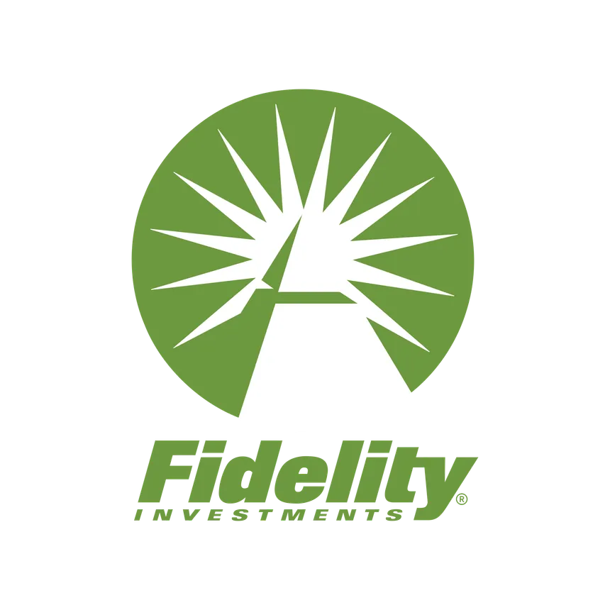
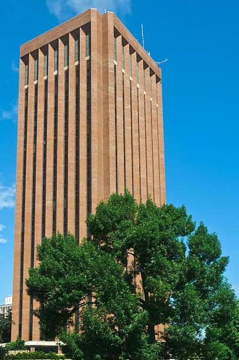
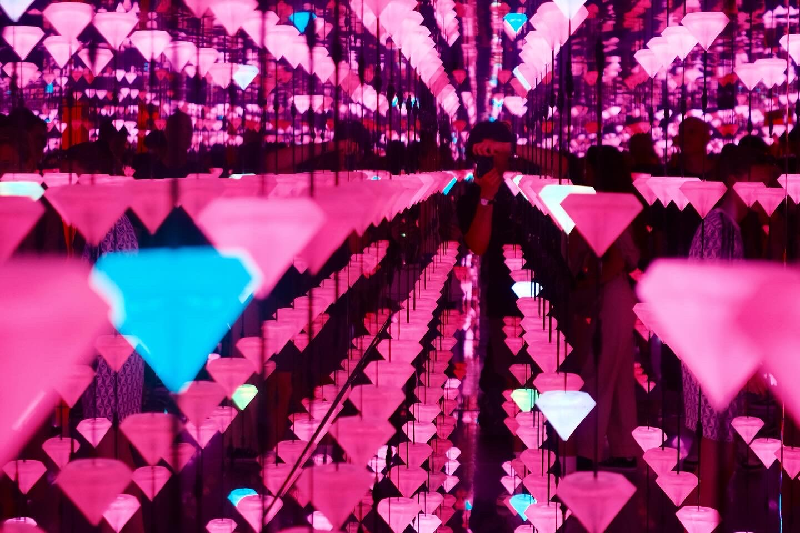
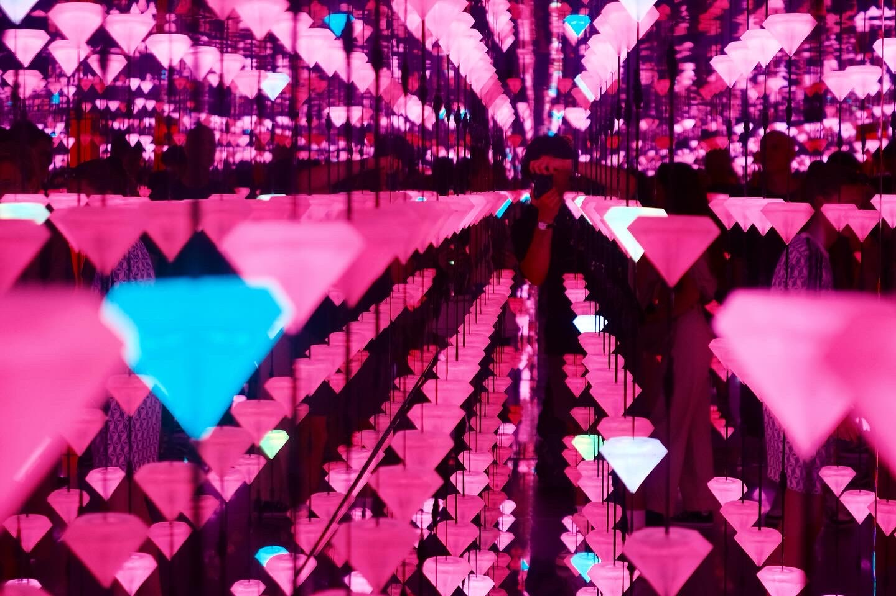

Hey, I'm
Liam Glockner
"I started this website as a place to learn and grow my skills in front end development. The idea of using this site to be creative and having it become a long term project to iterate and improve for years to come is a big motivator for me. My only hope from this project is that you enjoy learning a bit more about me and my background, and to inspire others to create their own websites."
All the Best,
- Liam
Experiences
Associate Software Engineer 
Fidelity Investments: June 2023 - Present
Building things has always been at the core of my pursuits and I have always wanted to have a job at the intersection of creativity and problem solving. Naturally, I gravitated towards the tech industry. There is a great amount of change and hard problems to be solved. I found fidelity to be a place where I can use new and emerging technology, while also having the stability and room to grow at a large company right out of school.
Working in regulatory reporting for a large financial company is an area where there is lots of pressure to get things done on time. If things are not done, the regulators fine the company. Having this sense of responsibiltiy to get things done and be punctual plays well into my personal beliefs and skill set.
- Utilized kdb+ and python to process, manipulate, normalize, and report millions of real time and batch process financial records to Financial regulators.
- Took initiative to optimize outdated processes and systems and improved lacking documentation and architecture diagrams for large production system.
- Developed initial wireframes and UI screens for defi regulators to monitor and change rules related to crypto exchanges, tokens, and wallet addresses using Angular and JS.
- Worked extensively with redhat Linux environment for development and testing.
- Developed for a production application in a highly regulated environment with firm time constraints.
Software Engineering Intern
Fidelity Investments: Summer 2022
Working as an Intern for a large investment bank was a great experience for me. As a technology centered company with lots of funding for cutting edge projects and research, I was excited for the opportunity.
I worked for the most part, on my own for the duration of the project and was given a lot of creative freedom with how the project looked. this was my first foray into front end devlopment and became a great area of growth for me.
Eventually it led to an interview for a fulltime position. I was invited to return to the team after gradutation and to be kept on part time after my internship was over. After some thought I passed on the opportunity, I wanted to try a different area of the company and a new tech stack.
- Led the design and development for the entirety of a proof-ofconcept idea involving auto-filling of customer liability data information utilizing Experian APIs, Angular, DynamoDB.
- Increased customer liability reporting by 24% through streamlining the linking of financial accounts on Net-Worth application.
- Conducted research into API development for this context.
- Created DynamoDB for storage of liability data using AWS and cloud formation templates.
IT Systems Technician
Umass Libraries: Jan 2020 - May 2023
My experience at the Umass Libraries during my time as an undergraduate student was one of my most formative experiences. To work in a place focussed on the learning and education was a incredibly fulfilling, since I knew that all the work I did everyday was benefiting the people around me.
I made some of my best friends in college through this job and learned everything about IT from my two bosses. Both at the time were the heads of technology systems for all of libaries on the Amherst campus. In my free time here I was able to tinker with the technology the library provided to all of its students. And when its the 3rd tallest library in the world, that means there is a lot of tech at your fingertips. From dissassembling hard drives, rebuilding entire computers for the staff, and even troubleshooting cutting edge 3D printers in the media lab, This job allowed me to help people through fixing things.
I loved my time here and it was extremely rewarding for me to understand what I was learning in my classes at a more physical level and to teach others the same. However, I couldn't stay. Graduation came and went and Boston was calling me.
- Developed a deep understanding of large-scale backend and cloud systems as well as physical server management techniques.
- Repaired, replaced, and digitally imaged/updated laptop and desktop computers for staff and classroom utilization/instruction.
- Installed, upgraded, and maintained library server and computer hardware including servers, tape libraries, tape drives, laptops, desktops cameras, network ports, to improve data transmission and storage capabilities.
- Mentored 7 new hires in final two years working.
UMASS Amherst
B.S in Computer Engineering, earned May 2023
Walking the halls of UMASS Amherst as a Computer Engineering student wasn't just about hitting the books; it was about diving headfirst into a whirlwind of experiences. Between grappling on the mats at Jiu Jitsu club, tinkering in the M5 Makerspace, and forging friendships that felt more like family, every day brought something new.
And when it came to putting my skills to the test, my internships at Fidelity Investments were game-changers. Working across different teams and technologies, I got a taste of the real-world tech scene, diving deep into projects and learning from some of the best in the business. But perhaps the highlight of my UMASS journey was my Senior Design Project. A group of passionate engineers coming together to bring our wildest idea to life – an autonomous robot. From brainstorming sessions to late-night coding and integration, we poured our hearts and souls into this project. And when our creation finally rolled through the halls of the lab all on its own, it was nothing short of magical. Watching our robot, powered by our code and creativity, was a moment I'll never forget.
Ultimately, UMASS Amherst gave me opportuinities and friends I will forever be greateful for. When I graduated I knew I would be ready for whatever the world threw at me.
Projects
B.R.U.C.E
- Autonomous air ventilation exploration robot capable of sensing various real time diagnostic information to help serve technicians.
- A* algorithm traversal with Arduino/Raspberry Pi microcontrollers and Custom PCB. Programmed in Micro Python and C++.
- Outcome: Received first place among 30 other design projects for ECE department. More Info
Garden Warden
- Created for my outdoor Garden plot with Python and Arduino to check moisture level of plants based on soil capacitance and send alerts when in need of watering. cerated using arduino and custom PCB.
- Outcome: Utilized BLE and Duty cycling techniques to reduce power consumption as well as help keep my vegetables happy even when I forget about them.
- Plan to integrate automated watering system and allow for user inputs to cater to varying plant types and watering constraints.
Photography
some of my favorites, find me on instagram below!


 
